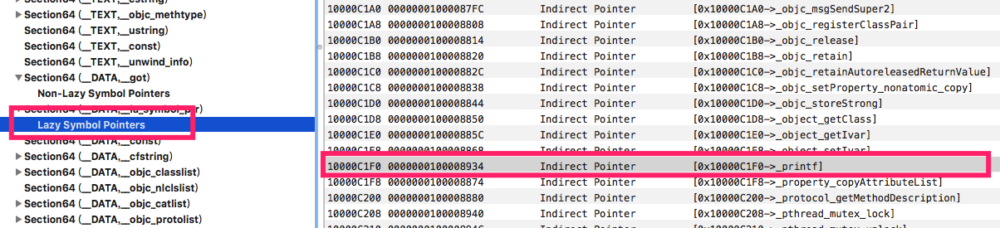

0x01 launchd
launchd是第一个被内核启动的用户态进程，负责直接或间接的启动系统中的其他进程。它是用户模式里所有进程的父进程，同时也将负责两种后台作业：守护程序和代理程序。
守护程序：后台服务，通常和用户没有交互。比如push通知、外接设备插入的处理和XPC等。
代理程序：可以和用户交互，比如Mac的Finder或iOS的SpringBoard就是其中之一，即广义上我们理解的桌面。
launchd是如何被创建的，得先看下下面这张XNU启动流程图

start(iOS)：初始化MSR、物理页映射、安装中断处理函数
arm_init(iOS)：初始化平台，为启动内核做准备
machine_startup：解析命令行参数和调试参数
kernel_bootstrap：安装和初始化mach内核的子系统，包括：进程间通信、时钟、访问策略、进程和线程调度。
kernel_bootstrap_thread：创建idle线程，初始化iokit设备驱动框架，初始化应用程序和dyld运行所需的共享模块。如果内核开启了mac(强制访问控制)策略，则会进行mac的初始化，以确保系统的安全。
bsd_init：内核部分剩余的事情都由其来做，初始化各个子系统。网络、文件系统、管道、内存cache、线程、进程、同步对象、权限策略等等。 一切完成后，会执行/sbin/launchd来创建一个launchd。
我们看下源码的初始化过程，launchd是怎么被启动起来的
1 | void bsd_init(void) { |
init_programs装的就是launchd程序的路径
1 | static const char * init_programs[] = { |
我们知道iOS和Mac执行的都是Mach-O格式的文件，即使是launchd也是一样，所以接下来的步骤，同样适用于其他进程加载app程序。
1 | int execve(proc_t p, struct execve_args *uap, int32_t *retval) |
0x02 MACH-O格式
Mach-O是OS X和iOS的可执行文件，类似于安卓的elf和微软的PE，但又不仅限于可执行文件，比如iOS的动态库其实也可以Mach-O格式。其格式如下图：
Mach-O在加载过程中，在内核态的处理主要是对进程的一些基本设置，比如分配虚拟内存、创建主线程以及代码签名、加密等任务。而在转由去用户态的时候调用动态加载器dyld会继续对Mach-O做处理，比如库加载和符号解析等。
1. header
头信息的格式如下：
1 | struct mach_header_64 { |
1.1 filetype
常见的Mach-O文件类型有以下几种：
MH_OBJECT
目标文件，比如编译后得到的.o文件
静态库文件，比如.a文件
MH_EXECUTE
可执行文件，广义上我们口中常说的app文件，即ipa拆包后得到的文件
MH_DYLIB
动态库文件，比如.dylib或.framework
MH_DYLINKER
动态链接器，启动dyld
MH_DSYM
存储着二进制文件符号信息的文件，常用于分析闪退信息等
1.2 flags
常见的标签参数有以下几种
MH_DYLDLINK
作为动态链接器的输入文件，不能再次被静态链接编辑
MH_PIE
加载主程序在一个随机地址。仅文件类型是MH_EXECUTE的才有效
2. Load Commands
这个主要描述的是文件在虚拟内存中的逻辑结构和布局，可以在被调用的时候清晰地知道如何设置并加载二进制数据。其结构如下
1 | struct load_command { |
Load Commands紧跟着mach_header，其总的大小保存在mach_header里的sizeofcmds里。所有的load commands都必须有自己的两个成员cmd和cmdsize，其中cmdsize在64架构中必须是8的倍数。而cmd表示的是类型，常见的类型如下
LC_SEGMENT(LC_SEGMENT_64)
将文件中(32位或64位)的段映射到进程地址空间。包括__text代码区、常量区和OC类信息等。
LC_LOAD_DYLINKER
启动动态链接器，dyld
LC_UUID
这个id是匹配一个二进制文件及其对应的符号，是个唯一值
LC_THREAD
开启一个Mach线程，不分配栈
LC_UNIXTHREAD
开启一个Unix线程，现被LC_MAIN替代
LC_CORE_SIGNATURE
代码签名，如果签名与代码本身不匹配，进程会被杀掉
LC_ENCRYPTION_INFO
加密信息
load_commands在Mach-O中的实例结构如下：
3. 通用 Mach-O
根据编译配置，我们可以生成只包含一种架构的Mach-O文件，比如armv7。当然也可以编译生成多架构的的Mach-O文件，这种包含多种架构的我们称之为通用Mach-O，也可以称为Fat Mach-O。运行通用Mach-O的时候，加载器会选择合适的架构的代码去执行。
0x03 地址空间随机布局(ASLR)
如果应用启动的时候都是进程空间某个固定地址开始，这也就意味着内存中的地址分布具有非常强的可预测性，这就给黑客很大的利用机会。所以现在大部分操作系统都会采用ASLR这样的技术，这将有效防止被攻击。
进程每一次启动时，地址空间都将被随机化，即偏移。实现方法是通过内核将Mach-O的Segment平移某个随机系数。后面的代码阅读中，我们将会遇到这个技术。
0x04 dyld被加载流程
在UNIX中，进程不能被创建出来，只能通过fork( ) 系统调用复制出来。
1 | int __mac_execve(proc_t p, struct __mac_execve_args *uap, int32_t *retval) |
execsw的结构如下
1 | struct execsw { |
对应的指令加载，load_machfile函数加载mach-o文件，activate_exec_state处理拿到的结果信息
1 | static int exec_mach_imgact(struct image_params *imgp) |
我们再解析完mach-o文件后，就会拿到结果信息取做处理，其中就有一个设置入口点，也就是在解析完毕后就会跳转到这个入口点运行程序，所以这个入口点很关键，那这个入口点是什么呢？其赋值肯定是在解析mach-o的过程中，所以还是得先来看看解析mach-o文件的过程
1 | static |
上面的过程得到的结果会被赋值进load_result_t这个结果体
1 | typedef struct _load_result { |
那么在哪里设置entry_point，其实entry_point的设置在load_dylinker里
1 | static load_return_t load_dylinker{ |
最后，梳理下这个app启动流程：
fork一条新的进程出来
激活app
a. 区分文件，Mach-o Binary和Fat Binary都有对应的加载函数
b. 分配内存
c. 解析主程序的Mach-O信息
d. 读取主程序Mach-O头信息
e. 遍历主程序每条load command信息，装载进内存
f. 解析dyld，再把d,e的内容再做一遍，期间会将entry_point入口地址改为dyld的入口地址。
进入entry_point对应的入口，启动dyld
设置进程的主线程
所有的操作做完，这时候也已经从内核态进入用户态了。
0x05 dyld加载程序流程
上面在最后一次加载完dyld后，就进入dyld的入口函数，即__dyld_start，这段其实是一段汇编代码
1 | __dyld_start: |
__dyld_start首先会调用dyldbootstrap::start函数对主程序再次进行一些处理，比如加载动态库，处理完成后会返回主程序的入口地址，然后设置好主程序入口的一些参数后就进入到主程序的main函数。我们关注的是主程序启动前还做了些什么事情？
1 | uintptr_t start(const struct macho_header* appsMachHeader, int argc, const char* argv[], |
主要的步骤如下：
- 设置上下文运行环境
- 加载共享缓存库
- 初始化主程序
- 加载插入的动态库
- 链接主程序
- 链接插入的动态库
- 初始化主程序
- 寻找主程序入口点
- 进入主程序入口点
加载共享缓存库：mapSharedCache
我们需要知道，像每个app自带的动态库，比如libobj或者libdispatch，都是被映射到在一个共享区，每个app都是从这里读取动态库的内容。这样就可以大大节省了内存空间。
1 | static void mapSharedCache() |
初始化主程序：instantiateFromLoadedImage
主要工作就是创建一个装在主程序的映像加载器(ImageLoader)。主要流程就三步：
- 检查主程序运行的CPU架构与当前设备的CPU架构是否匹配
- 实例化一个ImageLoader
- 把ImageLoader添加到一个管理表中
1 | static ImageLoaderMachO* instantiateFromLoadedImage(const macho_header* mh, uintptr_t slide, const char* path) |
主要看下instantiateMainExecutable的实现
1 | ImageLoader* ImageLoaderMachO::instantiateMainExecutable(const macho_header* mh, uintptr_t slide, const char* path, const LinkContext& context) |
加载插入的动态库：loadInsertedDylib
循环遍历DYLD_INSERT_LIBRARIES环境变量中指定的动态库列表
1 | static void loadInsertedDylib(const char* path) |
链接主程序：link
这步主要加载所有的动态库，符号绑定等。
1 | void ImageLoader::link(const LinkContext& context, bool forceLazysBound, bool preflightOnly, bool neverUnload, const RPathChain& loaderRPaths, const char* imagePath) |
继续看Mach-O格式图，我们可以看到text段下有__stubs和__stb_helper，以及data段下有__nl_symbol_ptr和__la_symbol_ptr。
__nl_symbol_ptr和__la_symbol_ptr 分别表示non lazy binding指针表和lazy binding指针表，这两个指针表分别保存的是字符串标对应的函数地址。
我们通过一个例子来了解__stubs、__stb_helper和__nl_symbol_ptr、__la_symbol_ptr 之间的关系。测试代码如下
1 | int main(int argc, char * argv[]) { |
在第一个printf打下断点，进入汇编模式进行查看
1 | testData`main: |
给0x1000cc67c下断点，继续看进入stub做什么了
1 | testData`printf: |
0x0000000100080934 - 0x0000000000078000 = 0x0000000100008934 ，而这个0x0000000100008934在Mach-O的位置，就是__la_symbol_ptr 内指向printf位置的地址

继续给0x0000000100080934 下断点，查看后面指令
1 | -> 0x1000cc934: ldr w16, 0x1000cc93c |
0x1000cc6e8处下断点
1 | 0x1001046e8: adr x17, #0x3998 ; (void *)0x00000001200da038: initialPoolContent + 2856 |
dyld_stub_binder函数是个汇编函数，它函数地址其实是从__nl_symbol_ptr取到的，在ARM中__nl_symbol_ptr就是__got。
总结，第一次访问printf符号的时候先去stub，stub告诉从__la_symbol_ptr查找，__la_symbol_ptr表示还没有printf符号真实函数地址，需要动态绑定，于是去__nl_symbol_ptr查找dyld_stub_binder函数的地址，进行查找真实的printf地址。找到后调用printf函数，并把这个地址保存进__la_symbol_ptr。下次调用printf函数的时候在__la_symbol_ptr就能得到真实地址进行跳转。
初始化主程序：initializeMainExecutable
初始化主程序和以及其相关的模块，比如动态库。这时候就会执行以前文章说的libobjc库
1 | void initializeMainExecutable() |
寻找主程序入口点：getThreadPC
在LC_MAIN段，程序入口点的保存位置是程序的头的起始位置 + 段记录的偏移地址。
1 | void* ImageLoaderMachO::getThreadPC() const |